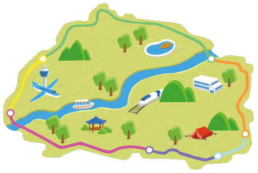
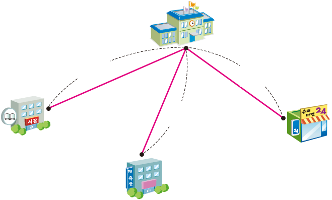

- 1
- 2
- 3
- 4
- 5
- 6
-
1 선의 길이를 어림하고 자로 재어 확인해 보세요.
어림하기 재어 보기 약 2 cm2 cm 5 mm 또는 25 mm -
2 안에 알맞은 단위를 써넣어 봅시다.
mmcmmkm-
우산의 길이는 약 65입니다.cm
-
땅콩의 길이는 약 38입니다.mm
-
독도에서 울릉도까지의 거리는 약 87입니다.초
-
교실 문 긴 쪽의 길이는 약 2입니다.m
-
-
3 길이가 1 km보다 긴 것을 모두 찾아 기호를 써 보세요.
ㄱ서울에서 세종시까지의 거리ㄷ자동차의 길이ㄴ운동화 끈의 길이ㄹ마라톤 코스의 거리ㄱ,ㄹ -
3 안에 알맞은 수를 써넣으세요.
6 km＝m60009 km 600 m＝m96005000 m＝km57800 m＝km7m800 -
4 산의 높이를 나타내 보세요.
산 km와 m로 나타내기 m로 나타내기 한라산 1 km 950 m1950 m 백두산 2 km 744 m 2744 m -
5 어느 관광 지도의 일부입니다. 하루에 1코스 길과 2코스 길을 이어 걸었을 때의 거리는 어느 코스 길을 걸었을 때의 거리와 같은지 써 보세요.
5코스 길
1 km 100 m6코스 길
3 km 700 m1코스 길
2 km2코스 길
790 m3코스 길
1300 m4코스 길
2700 m4코스 길 -
6 길의 길이가 긴 것부터 차례대로 써 보세요.
가길
1 km 300 m나길
1003 m다길
1030 m,가 길,다 길나 길